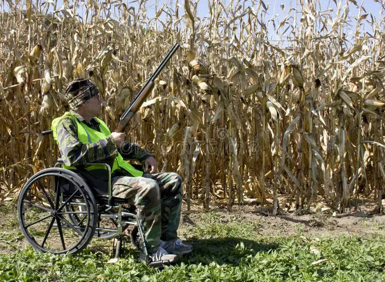
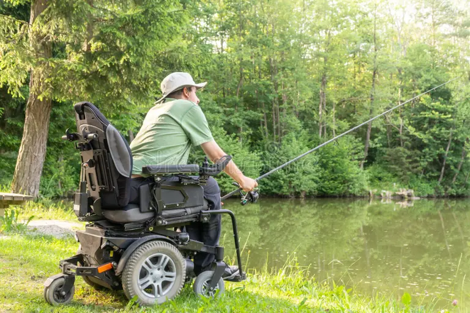
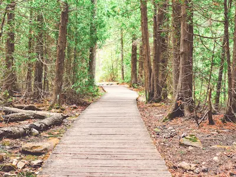
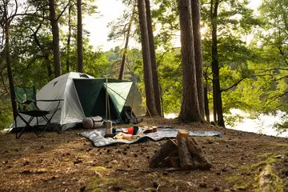

Nothing's Stopping You
Connecting individuals with disabilities to the great outdoors
Our Mission
No Excuse Hunting and Outdoors is dedicated to everyone who enjoys all the outdoors has to offer regardless of a physical or visual disability.
No Excuse Hunting and Outdoors believes that having a disability is not the same as having an inability to enjoy outdoors activities.
We encourage everyone to enjoy the outdoors regardless of what challenges life has put in the way. Success is not measured by harvesting an animal on a hunt or landing a fish, but by going outdoors and doing what many take for granted despite having a visual or physical disability.
Meet Our Founder
Not everyone with a disability is born with it. Many are acquired through life from car accidents, illness, or military service. No Excuse Hunting assists and encourages people with a physical or visual disability to try something new or to not abandon a life's passion due to a disability.
In February 2014 I lost my eyesight to a car accident but did not lose my passion for the outdoors. When I was discharged from the hospital and rehab center several months later, I discovered I was drawn for bull elk with my friend Brian Nichols. With help we overcame many challenges during that hunt and those challenges lead me to start No Excuse Hunting.
In 2016 the First No Excuse Hunting C.H.A.M.P. (Challenged Hunter Access Mobility Program) Day was held at Bass Pro Shop in Mesa, Arizona. This annual event has featured hunters who view their disability as just another challenge and refuse to allow it to impede a love for the outdoors. The expos also include organizations that help those with their challenges, products, guides and outfitters. There's something for everyone, not just those with disabilities.
We have donated hunting, fishing, and outdoor equipment to those with disabilities. Together with donation from sponsors and our volunteers we have held fishing events, Arizona hog hunting, Oklahoma archery white-tail, and New Mexico cow elk hunts. Check back for our future events.
-Dan Ferraro, No Excuse Outdoors
Outdoor Activities We Support
Adaptive Hunting
Experience the thrill of hunting with adaptive equipment and guided support tailored to your needs.
Fishing Adventures
Cast your line in accessible fishing locations with specialized gear and experienced mentors.
Nature Trails
Explore wheelchair-accessible trails and scenic outdoor locations throughout Arizona.
Camping Trips
Join our adapted camping experiences with accessible facilities and supportive community.
How We Support You
Community Connection
Connect with others who share your passion for the outdoors and similar experiences with disabilities.
Adaptive Equipment
Access specialized equipment and technology designed to make outdoor activities accessible to everyone.
Peer Support & Mentorship
Connect with experienced outdoor enthusiasts who share their knowledge and lessons learned from adapting to their own disabilities.
Ready to Get Started?
Join our community and discover the outdoor adventures waiting for you.
Get Involved Today